CS184/284A Fall 2026 Homework 1 Write-Up
Overview
In this homework, we implemented parts of a 2D vector graphics rasterizer. For Task 2, we extended triangle rasterization with supersampling to reduce aliasing along triangle boundaries. Instead of deciding whether a triangle covers a pixel using only one sample, the rasterizer stores several samples inside each pixel and averages them when producing the final framebuffer.
Task 1: Drawing Single-Color Triangles
Walkthrough of Our Triangle Rasterization
Rasterizing a triangle means deciding which pixels of the framebuffer it covers. We do this in two stages: first narrow the search down to the pixels that could possibly be covered, then run a coverage test on each of those candidates.
1. Bounding box
Testing every pixel in the framebuffer would be wasteful, since a triangle usually occupies a small part of the screen. Instead we take the minimum and maximum \(x\) and \(y\) over the three vertices and round them outward to whole pixels:
Rounding outward matters because vertices land at arbitrary floating-point positions. Taking the floor of the minimum and the ceiling of the maximum guarantees that the integer box still fully contains the triangle, so we can never clip off a sliver of it. We then iterate over the half-open ranges \(x \in [x_{\min}, x_{\max})\) and \(y \in [y_{\min}, y_{\max})\). The ranges are half-open because pixel \((x,y)\) owns the unit square \([x, x{+}1) \times [y, y{+}1)\), so the last pixel that can overlap the triangle has index \(\lceil \max \rceil - 1\).
2. Sample position
For each candidate pixel we test a single sample at the center of the pixel rather than at its corner:
Sampling at the center means a pixel is filled when the triangle covers the middle of it, which is a better estimate of coverage than testing a corner shared between four neighboring pixels.
3. The edge function
To decide whether the sample is inside the triangle we use a helper that evaluates, for a directed edge running from \(A\) to \(B\) and a query point \(P\), the quantity
This is the \(z\)-component of the 2D cross product \((B - A) \times (P - A)\). What makes it useful is its sign: it is positive when \(P\) lies on one side of the infinite line through \(A\) and \(B\), negative when it lies on the other, and exactly zero when \(P\) lies on the line itself. Its magnitude is twice the area of triangle \(ABP\), a fact we come back to in Task 4.
4. Point-in-triangle test
We evaluate the edge function for the three directed edges \(v_0 \to v_1\), \(v_1 \to v_2\), and \(v_2 \to v_0\). Because these three edges traverse the boundary consistently in one rotational direction, a point inside the triangle lies on the same side of all three lines, which means all three edge values share a sign. A point outside the triangle is on the wrong side of at least one edge, so at least one value disagrees.
Rather than requiring the values to be positive, we accept a sample when all three are non-negative or all three are non-positive:
This handles winding order for free. A
counter-clockwise triangle produces all-positive values for interior
points, while a clockwise triangle produces all-negative ones. Checking
both cases means we never have to detect the winding or reorder the
vertices, which is why basic/test6.svg renders correctly
whichever order its vertices are given in.
Using the non-strict comparisons \(\ge\) and \(\le\) rather than strict ones also means that \(e_i = 0\) counts as covered, so a sample landing exactly on an edge is drawn. This satisfies the requirement that boundary samples be filled and guarantees that no edge of the triangle is left un-rasterized.
5. Filling
When the test passes we call fill_pixel(x, y, color), which
writes the triangle's color into the buffer at index
y * width + x. Samples that fail the test are left alone
and keep the white background they were cleared to.
Why This Is No Worse Than Checking Every Sample in the Bounding Box
The baseline to beat is: compute the smallest rectangle that contains the entire triangle, then test every sample inside it. Our algorithm is that algorithm, so its cost is the same rather than larger. Concretely, three properties hold.
We never test a sample outside the bounding box. The loop bounds are derived only from the vertex extrema, and \([\lfloor \min \rfloor, \lceil \max \rceil)\) is the smallest half-open integer interval containing \([\min, \max]\). The set of pixels we visit is therefore exactly the set whose unit squares intersect the triangle's real-valued bounding box, with no padding beyond the rounding that correctness requires.
We never test a sample twice. The two nested loops run over distinct integer coordinates, and at one sample per pixel each candidate is evaluated exactly once.
The work per sample is constant. Each sample costs three edge-function evaluations, each of which is two multiplications and five subtractions, followed by at most six short-circuited comparisons. There is no allocation, no per-sample setup, and no work that grows with the size of the triangle.
Multiplying these together, the total cost is proportional to the area of the bounding box in pixels, which is precisely the cost of the baseline. It can never exceed it.
The comparison worth making is against the naive alternative of testing
every pixel in the framebuffer, which costs
\(\Theta(\text{width} \times \text{height})\) per triangle no matter how
small the triangle is. At the 1600×1200 resolution used for
test4.svg, a triangle covering a few hundred pixels would
still trigger nearly two million coverage tests. Restricting the loops
to the bounding box makes the per-triangle cost proportional to the
triangle's own screen footprint instead of the screen's size.
To be precise about the claim: we did not do anything to be faster than the bounding-box approach. There is no incremental update of the edge functions along a scanline, no per-scanline span clipping, and no block-level early rejection. The claim is that our cost equals the bounding-box cost, not that it improves on it.
Results
With the rasterizer in place, the four single-color test files render correctly. All four are shown at 800×600 with the default viewing parameters and one sample per pixel.
basic/test3.svg
basic/test4.svg
basic/test5.svg
basic/test6.svgPixel Inspector: basic/test4.svg
basic/test4.svg with the pixel inspectorThe inspector is centered on the right side of the scene, where the thin magenta triangle runs alongside the black border of the canvas. Because we take a single sample per pixel, every pixel in the magnified view is either fully magenta or fully white, with no intermediate shades. The sliver is only about one pixel wide, so instead of a continuous line it renders as short vertical runs of pixels that jump sideways by a whole pixel at a time, and it breaks apart entirely in the stretches where the triangle is narrow enough to pass between pixel centers without covering any of them.
This is the aliasing that the supersampling in Task 2 addresses. The coverage test itself is correct here: every pixel whose center falls inside the triangle is filled, and every pixel whose center falls outside is not. The problem is that one sample per pixel is too coarse to represent a shape thinner than a pixel, so the information is lost before it ever reaches the framebuffer.
Task 2: Antialiasing by Supersampling
Algorithm and Data Structures
Supersampling is implemented with a single new data structure: a
sample_buffer, a flat std::vector<Color> of
size width * height * sample_rate. Instead of one color per
pixel, each pixel owns a contiguous block of sample_rate
color slots, found at offset (y * width + x) * sample_rate.
This lets the rasterizer store a separate color for every subsample of a
pixel and combine them later, rather than picking a single in/out answer
per pixel.
For every triangle, rasterize_triangle first computes an
axis-aligned bounding box from the three vertices and clamps it to the
framebuffer, so only pixels the triangle can possibly touch are visited.
Within that box, each pixel is subdivided into an n x n grid
of subsamples, where n = sqrt(sample_rate) (a rate of 4 gives
a 2x2 grid, 16 gives a 4x4 grid). Each subsample sits at the center of its
cell:
Each subsample is tested against the triangle independently using the same
edge-function test as Task 1: the 2D cross product is evaluated for all
three directed edges, and the subsample is covered when all three edge
values share the same sign (checking both all-positive and all-negative
handles either winding order). A covered subsample gets the triangle's
color written into its slot in sample_buffer; an uncovered
subsample keeps whatever was there before (the white background, since
clear_buffers fills the whole sample buffer with
Color::White).
Why Supersampling Is Useful
Testing a triangle against one point per pixel forces a binary decision: the pixel is either fully the triangle's color or fully the background. Along a diagonal or curved edge, this produces a hard staircase pattern because pixels straddling the edge are rounded to one side or the other. Supersampling replaces that single point test with several point tests spread across the pixel, so a pixel that is only partially covered by the triangle ends up with some subsamples inside and some outside. Averaging those subsamples produces a color that is a blend of the triangle and the background, proportional to how much of the pixel the triangle actually covers. This is what removes the jagged, stair-stepped edges that appear at a sample rate of 1.
Modifications to the Rasterization Pipeline
Starting from the Task 1 single-sample rasterizer, four places needed to change to support supersampling:
-
Buffer sizing.
RasterizerImp's constructor,set_sample_rate, andset_framebuffer_targetall size (or resize)sample_buffertowidth * height * sample_rate, since the number of stored samples now scales with the sample rate rather than just the pixel count. Changing the sample rate at runtime (the=/-keys) reallocates this buffer. -
Triangle coverage testing.
rasterize_trianglewas changed from testing one point per pixel to looping over ann x ngrid of subsample positions per pixel and running the edge test on each one independently, writing results into the per-pixel block ofsample_bufferdescribed above. -
fill_pixel. Used by point and line rasterization, this was updated to write the same color into every subsample slot for a pixel, so points and lines stay fully opaque and axis-aligned rather than fading out as the sample rate increases. -
resolve_to_framebuffer. This function now runs once after all SVG elements are rasterized, and for every pixel it averages that pixel'ssample_ratestored samples into a single color before writing it to the 8-bit RGB framebuffer, instead of copying a single stored value straight across.
Using Supersampling to Antialias Triangles
Putting the pieces together: for each triangle, every pixel in its
bounding box is tested at sample_rate sub-pixel positions
instead of one. Pixels fully inside the triangle end up with all
subsamples set to the triangle color; pixels fully outside keep the
background in every subsample; pixels straddling an edge end up with a
mix. Once every triangle (and other SVG element) has been rasterized,
resolve_to_framebuffer averages each pixel's samples:
The averaged red, green, and blue values are clamped to [0,1]
and converted to 8-bit values before being written to the target
framebuffer. A boundary pixel therefore becomes a proportional mixture of
the triangle color and the background — closer to the triangle color the
more subsamples it covers — instead of the abrupt one-or-the-other
transition Task 1 produced. Increasing the sample rate increases
n, giving a finer-grained coverage estimate at the cost of
more edge tests, more memory, and slower rasterization, with
diminishing visual returns once the result is displayed back at the
original framebuffer resolution.
The current implementation assumes sample rates are perfect squares (1,
4, 9, 16), matching the rates exposed by the viewer's =/-
keys.
Testing Our Implementation
We used test4.svg to view different supersample rates.
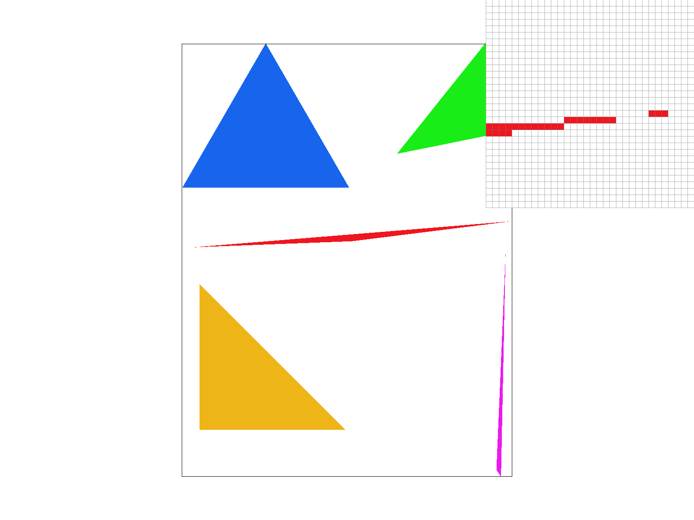
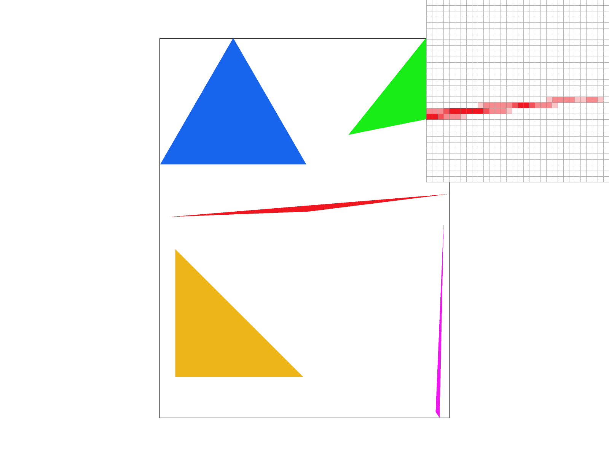
As the sample rate increases from 1 to 16, the jagged, stair-stepped edges seen at a sample rate of 1 are progressively smoothed out. By a sample rate of 16, edges blend gradually into the background instead of transitioning abruptly, confirming that supersampling reduces aliasing.
At a sample rate of 1, each pixel is tested at a single point, so the
rasterizer's edge test can only answer "fully in" or "fully out" for
that pixel. Any edge that isn't perfectly horizontal or vertical ends up
rounded to whole pixels, which is what produces the jagged, stair-stepped
boundary in the sample-rate-1 image. Raising the sample rate replaces that
single point with an n-by-n grid of subsample points per pixel (n = 2 for
rate 4, n = 3 for rate 9, n = 4 for rate 16), and each subsample is tested
against the triangle independently, so a pixel straddling an edge now ends
up with some subsamples inside the triangle and some outside instead of a
single all-or-nothing verdict. Averaging those subsamples in
resolve_to_framebuffer turns that mix into a color that is
proportional to how much of the pixel the triangle actually covers, so
edge pixels become a blend of the triangle color and the background
rather than one color or the other. This is why the edges visibly soften
from rate 1 to rate 4 to rate 9 to rate 16: more subsamples per pixel give
a finer-grained estimate of coverage, so the transition between triangle
and background is spread over a wider gradient of intermediate colors
instead of jumping abruptly at the pixel boundary. The improvement
diminishes as the rate keeps climbing because coverage is already being
estimated fairly well by rate 9, and the final image is still displayed
at the same framebuffer resolution regardless of how many subsamples were
averaged to produce each pixel.
Extra Credit: Jittered Sampling (1 pt)
In addition to the required regular n-by-n supersampling grid, we implemented jittered sampling. Each pixel is still divided into the same n-by-n grid of subcells (so the total sample count per pixel is unchanged), but instead of placing every sample at its subcell's center, we place it at a random offset within the subcell:
This is toggled at runtime with the 'J' hotkey, alongside the
existing sampling controls.
Why Jittering Helps
Grid supersampling is still a regular sampling pattern — it just has a higher sampling frequency than one sample per pixel. Any signal with periodic structure at a frequency close to that sampling frequency can still alias, and because both the signal and the sampling grid are regular, the resulting error is also regular: it shows up as a coherent, low-frequency moiré pattern rather than as independent per-pixel error. Jittering breaks this correlation. Each sample lands at a different, unpredictable offset, so the sampling "grid" is no longer periodic. The same aliasing error is still present in each individual sample, but it no longer beats coherently against the signal — it becomes high-frequency noise instead of a low-frequency pattern. Noise is generally far less objectionable to the eye than a structured pattern, especially at normal viewing distance.
Test Scene
To make this effect obvious, we built a scene designed specifically to alias under grid sampling: a 400x400 canvas filled with ~700 thin black stripes, tilted 3° from vertical, with a period of 1.6 pixels — finer than a single pixel of resolution. The tilt is important: an axis-aligned grating at an integer-pixel period mostly just resamples cleanly, while a tilted, sub-pixel-period grating beats strongly against a regular sampling grid.
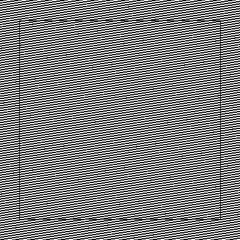
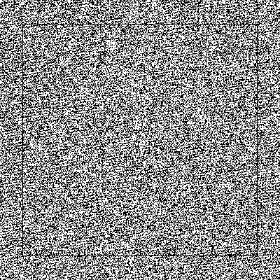
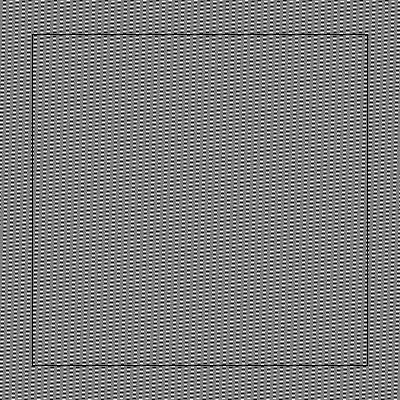
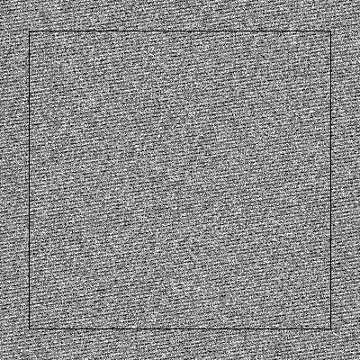
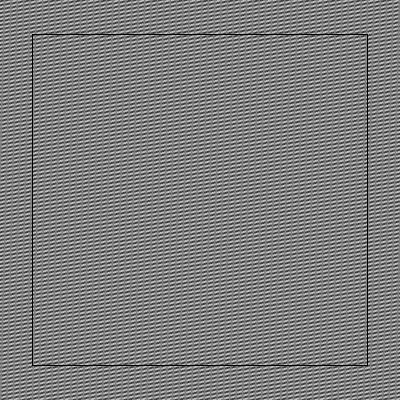
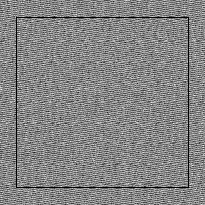
At every sample rate we tested, grid sampling produces a clearly visible diagonal herringbone moiré pattern across the whole image — it is still faintly visible even at 16 samples per pixel, because the grating's period is well below what a 4-by-4 grid can resolve. Jittered sampling, even at just 1 sample per pixel, replaces that coherent pattern with fine, unstructured noise that reads as a roughly uniform gray at normal viewing distance — much closer to the true 50% black/white coverage the grating actually has. This is exactly the case the required grid supersampling handles poorly: a high-frequency, near-regular signal that the sampling grid itself is too coarse to resolve.
Task 3: Transforms
Why the Matrices Are 3×3
All three transforms act on 2D points, so it is reasonable to ask why they are not 2×2. The reason is translation. Scaling and rotation are linear maps and can be written as 2×2 matrices, but translation is not linear: it moves the origin, and no 2×2 matrix can do that because \(M\mathbf{0} = \mathbf{0}\) for every \(M\).
Homogeneous coordinates get around this by embedding the plane in 3D at
\(w = 1\), writing the point \((x, y)\) as \((x, y, 1)\). A translation
then becomes a shear along the third coordinate, which is linear
in 3D and so can be written as a matrix. The payoff is uniformity: once
all three transforms are 3×3 matrices, composing them is just
matrix multiplication, which is what lets the SVG hierarchy nest
transforms inside one another. The overloaded * operator
does the embedding and then divides by the resulting \(w\):
For the three transforms here the bottom row is always \((0, 0, 1)\), so \(w' = 1\) and the division does nothing. It matters for projective transforms, which these are not.
The Three Matrices
Translation puts the offsets in the third column, where they get multiplied by the \(1\) in the homogeneous coordinate and added to \(x\) and \(y\):
Scaling is the diagonal matrix that multiplies each axis independently. Note that it scales about the origin of the current coordinate system, not about the center of whatever is being drawn:
Rotation takes its argument in degrees, so we first convert to radians with \(\theta = \mathtt{deg} \cdot \pi / 180\), then build the standard rotation block in the upper-left 2×2:
This rotation is counter-clockwise in a coordinate system whose \(y\) axis points up, but SVG's \(y\) axis points down. A positive angle therefore rotates the \(+x\) axis toward \(+y\), which reads as clockwise on screen. This sign is easy to get backwards, and it decides which way each of cubeman's limbs swings: a limb on the \(+x\) side of the body is raised by a negative angle, and one on the \(-x\) side by a positive angle.
my_robot.svg
We wanted cubeman waving while mid-stride, as if he were greeting someone while walking past.
The obstacle is that rotate() always rotates about the
origin of the current coordinate system, and in the original file each
limb is a translate() straight to the middle of the limb.
Rotating there would spin the limb about its own center rather than
swinging it from the body. What we needed was a rotation about the
shoulder or the hip, which is the standard three-step idiom: translate
the pivot to the origin, rotate, then translate back.
<g transform="translate(50 -40)"> <!-- move the origin to the shoulder -->
<g transform="rotate(-60)"> <!-- rotate about it -->
<g transform="translate(-50 40)"> <!-- undo the move -->
<g transform="translate(90 -40)"> <!-- the original arm, untouched -->
...
Because the wrappers put the limb back where it started before the
original group runs, each of cubeman's arms and legs is pasted in
verbatim from robot.svg. The only difference between the
two files is the wrappers themselves.
This is also where the hierarchical part of the
transform stack does the work. The single rotate(-60) at
the shoulder applies to everything nested below it, so the forearm
swings along with the upper arm and stays attached to it without our
having to compute its new position. The four rotations that make up the
whole pose are:
The legs get much smaller angles than the arms on purpose. A stride reads as a stride at fifteen or twenty degrees, and pushing it further made cubeman look like he was doing the splits rather than walking.
Both files are shown below. The original on the left confirms that the
three matrices are correct, since robot.svg renders as the
reference image does. The posed version on the right uses the identical
blocks and colors, differing only in the transform wrappers.

robot.svg, the original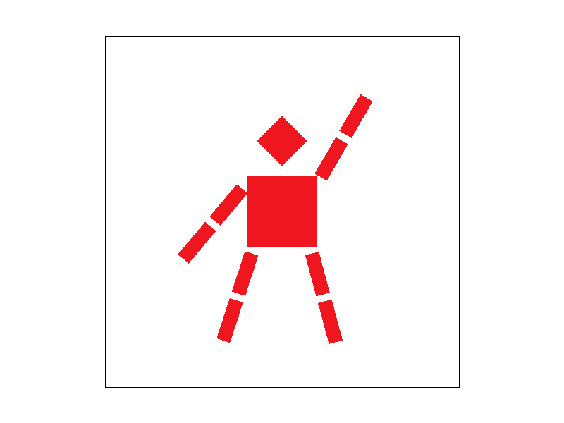
my_robot.svg, waving mid-strideTask 4: Barycentric Coordinates
What Barycentric Coordinates Are
Up to this point a triangle has been described by where its corners sit on the screen, and a point has been described by its own \((x, y)\). Barycentric coordinates describe a point a different way: not by its absolute position, but by how much of each vertex it is. Any point \(P\) in the plane of a triangle can be written as a weighted combination of the three vertices,
and for a given triangle that triple \((\alpha, \beta, \gamma)\) is unique. The name comes from barycenter, meaning center of mass: if you place masses \(\alpha\), \(\beta\), and \(\gamma\) at the three corners, then \(P\) is exactly the point where the triangle would balance. Weighting a corner more heavily drags the balance point toward it.
That picture explains the behavior that makes these coordinates useful:
- At \(v_0\) the coordinates are \((1, 0, 0)\), and likewise \((0,1,0)\) at \(v_1\) and \((0,0,1)\) at \(v_2\). All the mass sits on one corner.
- On the edge opposite \(v_0\), the weight \(\alpha\) is exactly zero, and the other two vary linearly along that edge.
- \(P\) is inside the triangle precisely when all three weights are non-negative. A negative weight means \(P\) is on the far side of the edge opposite that vertex.
- The centroid is \((\tfrac13, \tfrac13, \tfrac13)\), the balance point of three equal masses.
Computing Them as Area Ratios
The way we actually compute the weights is with areas. Connecting \(P\) to all three corners cuts the triangle into three smaller ones, and each weight is the area of the sub-triangle opposite its vertex divided by the area of the whole:
Written this way the constraint \(\alpha + \beta + \gamma = 1\) needs no proof: the three sub-triangles tile the original exactly, so their areas have to add back up to it. It also makes the vertex behavior obvious. As \(P\) approaches \(v_0\), the sub-triangle opposite \(v_0\) grows to fill the whole triangle while the other two collapse to nothing, so \(\alpha \to 1\).
We compute each area with the signed-area formula
which is the same 2D cross product that Task 1 used for coverage. In fact the edge function from Task 1 is exactly twice this quantity, \(E_{A \to B}(P) = 2\,\mathrm{Area}(A, B, P)\), so the two tasks are using one expression for two purposes: its sign decides which side of an edge a sample is on, and its magnitude gives the interpolation weight.
The areas are signed, which is what makes this work for either winding order. A clockwise triangle produces a negative denominator, but it also flips the sign of every numerator, so the negatives cancel in the ratio and the weights come out correct without any special case. The one thing that has to be guarded is a denominator of zero, which happens when the three vertices are collinear. Such a triangle has no interior to shade, so we return early rather than divide by zero.
Interpolating Color
Once the weights are known, interpolating the vertex colors is the same weighted average applied to color instead of position:
Because the weights sum to one, this is a true average rather than an arbitrary sum, which means the result always stays within the range of the three vertex colors. Blending three valid colors can never produce an out-of-range one. The same weights work for any per-vertex attribute, not just color, which is what Task 5 relies on when it interpolates texture coordinates instead.
Implementation Notes
rasterize_interpolated_color_triangle reuses the structure
from Tasks 1 and 2 unchanged: the same clamped bounding box, the same
supersampling grid, and the same three edge functions to decide coverage.
Coverage is still determined by the edge tests, not by the signs of the
barycentric weights. The weights are computed only for samples that
already passed, and are used solely to pick the color.
The one value hoisted out of the loop is the denominator, since \(\mathrm{Area}(v_0, v_1, v_2)\) depends only on the triangle and not on the sample. The three numerators have to be recomputed per sample because each depends on \(P\).
The weights are evaluated at each sample position rather than once per pixel, so barycentric interpolation composes with the supersampling from Task 2 for free. At a sample rate above one, a pixel along a triangle edge averages several independently interpolated colors, which antialiases the silhouette and the color gradient together.
Results
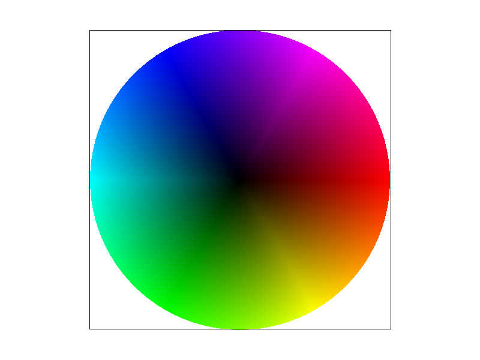
basic/test7.svg at sample rate 1The color wheel is built from many thin triangles that all share a vertex at the center. Each one has a black center vertex and two saturated outer vertices of slightly different hue. Barycentric interpolation is what turns that sparse description into a continuous image: the darkening toward the middle comes from \(\alpha\) rising as samples approach the shared black vertex, and the hue sweep around the rim comes from the two outer weights trading off along each triangle's outer edge. Neighboring triangles agree on their shared edge because the weight of the non-shared vertex falls to exactly zero there, so no seams appear between them.
Task 5: Pixel Sampling for Texture Mapping
What Pixel Sampling Is, and How We Implemented It
Texture mapping assigns each triangle vertex a UV coordinate in \([0,1]^2\) that points into a texture image. When the rasterizer shades a covered sample, it interpolates that UV coordinate across the triangle using barycentric weights, but the interpolated coordinate almost never lands exactly on a texel center. Pixel sampling is the problem of turning that continuous UV coordinate into a single color, by choosing which texel (or combination of texels) to read.
rasterize_textured_triangle reuses the bounding-box and
supersampling-grid structure from Tasks 2 and 4: for every sample inside
the clamped bounding box, we compute barycentric coordinates
\((w_0, w_1, w_2)\) with respect to the triangle's three vertices, and
covered samples interpolate the vertex UVs the same way Task 4
interpolates vertex colors:
That UV, together with the current pixel-sampling method (toggled with the
'P' hotkey), is packed into a SampleParams
struct and passed to Texture::sample, which dispatches to
either sample_nearest or sample_bilinear.
Nearest-Neighbor Sampling
sample_nearest maps the continuous UV coordinate directly
onto a texel index, rounding to the closest one:
The index is clamped to the valid range and that single texel's color is returned unchanged. This is fast, but produces a piecewise-constant color across each texel's footprint, which looks blocky whenever the texture is magnified.
Bilinear Sampling
sample_bilinear uses the same continuous coordinate
\(x = u\cdot(\mathrm{width}-1)\), \(y = v\cdot(\mathrm{height}-1)\), but
instead of rounding, it takes the four texels surrounding that point and
blends them by their distance to it:
where \(s\) and \(t\) are the fractional parts of \(x\) and \(y\). This costs four texture reads instead of one, but produces a smooth gradient across texel boundaries instead of a hard edge.
Comparison: Nearest vs. Bilinear
We used the pixel inspector on svg/texmap/test2.svg and
zoomed into the map's latitude/longitude grid lines, where the texture is
magnified enough that individual texels are clearly visible.
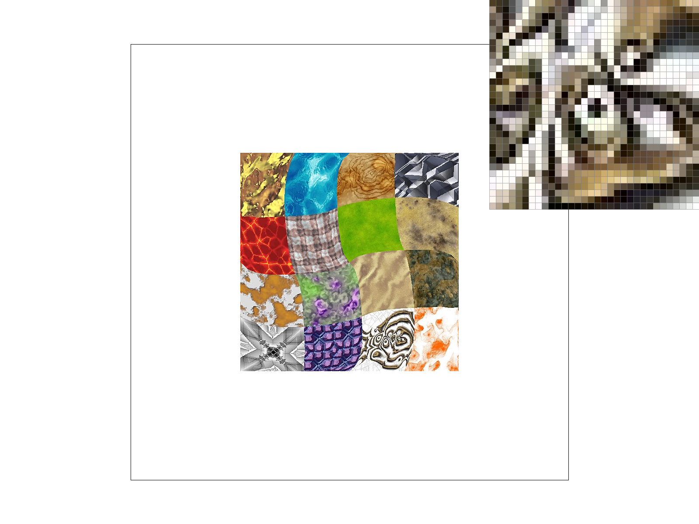
At 1 sample per pixel, nearest sampling shows hard, blocky edges along the grid lines — each screen pixel repeats a single texel's color, so a magnified texel boundary becomes a visible step. Bilinear sampling at the same 1 sample per pixel smooths that same boundary into a gradient, because it blends the four nearest texels by distance instead of rounding to one. Raising the sample rate to 16 sharpens the triangle's silhouette edges in both cases (Task 2's antialiasing), but it does not change the blockiness inside the texture itself — nearest at 16 samples is still visibly blockier than bilinear at 1 sample.
When the Difference Is Large, and Why
The gap between nearest and bilinear is largest wherever the texture is magnified — where a single triangle covers many screen pixels but only a small range of UV space, so many pixels map into the same texel under nearest sampling. That is exactly what happens on the grid lines above: nearest sampling repeats one texel's color across a whole block of pixels, producing hard edges, while bilinear blends neighboring texels into a smooth transition. Increasing the sample rate from 1 to 16 barely narrows this gap, because supersampling only changes how triangle coverage is estimated at silhouette edges — it does not change how a single texture lookup is filtered once a sample is known to be inside the triangle. Where the texture is not magnified (roughly one texel per screen pixel or smaller), the two methods look nearly identical, since there is no texel-sized block large enough to be visible either way.
Task 6: Level Sampling with Mipmaps
What Level Sampling Is
Tasks 5 and 6 solve opposite halves of the same problem. Pixel sampling deals with magnification, where one texel covers many screen pixels and the question is how to smooth between texels. Level sampling deals with minification, where the situation is reversed: a textured triangle is small or far away, so a single screen pixel covers a large patch of the texture.
Minification is the harder case. If a pixel's footprint spans a hundred
texels, then reading one of them with sample_nearest throws
away the other ninety-nine, and the one that happens to get picked jumps
erratically as the camera moves. Bilinear sampling barely helps, because
averaging four adjacent texels out of a hundred is still not
representative of the patch. The result is aliasing: moire patterns in
regular textures, and shimmering noise as the view changes.
What we actually want is the average of every texel in the footprint, but computing that per sample would mean summing hundreds of texels. A mipmap makes it cheap by doing the averaging ahead of time. The texture is stored as a pyramid of prefiltered copies, each level half the width and height of the one before, so level 0 is the original, level 1 averages every 2x2 block, level 2 every 4x4, and so on. One texel at level \(d\) already represents the average of a \(2^d \times 2^d\) region of the original.
Level sampling is then the job of picking the level whose texels are about the same size as the pixel footprint, so that a single lookup returns a properly averaged value. The expensive filtering moves from render time to a one-time preprocessing step.
Computing the Mip Level
Choosing a level requires knowing how fast the texture coordinates change
per screen pixel. We measure this with finite differences. In
rasterize_textured_triangle, alongside the barycentric
interpolation that gives the sample's own coordinate, we run the same
interpolation at one pixel step in each direction:
get_level differences these to get the two vectors describing
how far the texture coordinate moves for a one-pixel step across the
screen. Those differences are in \(uv\) space, which runs from 0 to 1
regardless of resolution, so they are scaled by the width and height of
the full-resolution texture to convert them into texel units:
Together these two vectors span the pixel's footprint in the texture. We take the length of the longer one and then the base-2 logarithm:
The logarithm is exactly right because the pyramid halves resolution at every step, so texels at level \(d\) are \(2^d\) times larger than at level 0. Setting \(2^D = L\) makes one texel at level \(D\) match the footprint. The values line up as expected: a footprint of one texel gives \(D = 0\) and uses the full-resolution image, a footprint of four texels gives \(D = 2\), and so on. \(D\) is clamped to \([0, \texttt{max_level}]\) so that a magnified surface cannot ask for a negative level and a tiny one cannot run off the end of the pyramid.
The Three Level Methods
Texture::sample dispatches on lsm, with a small
helper that performs the actual lookup at a given level using whichever
pixel sampling method is currently selected. Keeping that in one place is
what makes the two settings fully independent, so all six combinations
work without any special casing.
- L_ZERO ignores the footprint entirely and always reads level 0, which is the Task 5 behavior.
- L_NEAREST rounds \(D\) to the closest integer level and does one lookup there.
- L_LINEAR keeps \(D\) continuous. It samples both neighboring levels, \(\lfloor D \rfloor\) and \(\lfloor D \rfloor + 1\), and blends them by the fractional part \(t = D - \lfloor D \rfloor\). This removes the visible seams that L_NEAREST can leave where the chosen level changes from one region to the next, since the transition becomes gradual instead of abrupt.
Tradeoffs: Speed, Memory, and Antialiasing Power
The three techniques are complementary rather than competing, because each attacks a different source of aliasing.
Samples per pixel (supersampling) is the most expensive
on both axes. Cost scales linearly with the rate, so 16 samples per pixel
means 16 times the coverage tests and 16 times the texture lookups. It is
also the only one of the three with a real memory cost at render time,
since the sample buffer holds
width * height * sample_rate colors, so 16 samples per pixel
needs 16 times the framebuffer. In exchange it is the most general: it is
the only technique here that antialiases geometry, meaning
triangle silhouettes and thin slivers like the ones in Task 1. What it is
weak at is exactly texture minification, because raising the rate from 1
to 16 still only captures 16 of the hundreds of texels in a large
footprint.
Pixel sampling is the cheapest of the three. Bilinear costs four texel reads and a few interpolations instead of one, a small constant factor on the lookup alone, and it needs no extra memory whatsoever since it reads the same texture. Its antialiasing power is narrow: it produces smooth gradients under magnification instead of blocky texel edges, but under heavy minification it does almost nothing, for the reason given above.
Level sampling has the best ratio of the three for
minification. L_NEAREST costs one lookup, the same as
L_ZERO, and in practice often runs faster than
sampling level 0, because the smaller levels are far friendlier to the
cache: a distant surface reads from a tiny image that fits in cache
instead of scattering reads across a large one.
L_LINEAR doubles the lookups. The memory cost is a one-time
preprocessing expense of storing the pyramid, which converges to only one
third extra:
For that fixed cost it handles an arbitrarily large footprint, because the averaging was precomputed rather than done per sample. Its weakness is anisotropic footprints. When a surface is viewed at a steep angle the footprint is long and thin, but taking the maximum of the two axis lengths forces a level chosen by the longer one, which over-blurs along the shorter one. Fixing that properly is what anisotropic filtering does.
In short: supersampling for geometry, pixel sampling for magnification, and level sampling for minification. Using all three together costs the most but covers every case.
Comparison of Sampling Methods
Level sampling and pixel sampling are set independently, so every combination of the three level methods and the two pixel methods is valid. Each set below shows all six, with the level method varying down the rows and the pixel method across the columns. Within a set, every screenshot is taken from the same camera position so that the only difference is the sampling method.
The captions below use the names the renderer itself reports in its status bar, which map onto the enumeration values used earlier as follows. Note that "bilinear" appears in both columns and means something different in each: blending two mip levels on the left, and blending four texels within one level on the right.
- Level 0 is
L_ZERO - Level nearest is
L_NEAREST - Level bilinear is
L_LINEAR - Nearest pixel is
P_NEAREST - Bilinear pixel is
P_LINEAR
The four combinations the task asks for are the first two rows of the first set: level 0 and level nearest, each crossed with nearest pixel and bilinear pixel. The third row adds level bilinear, and the pairing of level bilinear with bilinear pixel is trilinear filtering. The remaining sets apply the same grid to the provided test files.
Our Own Texture
The texture we chose is the source image below, shown here at full resolution rather than as a render. It is a four-by-four atlas of sixteen unrelated material patches, so a single image contains both hard, high-contrast boundaries at the tile seams and fine internal detail such as the crack network, the woven fabric, and the line art. Those are the features that alias most visibly when the texture is minified, which is what makes the differences between the sampling methods easy to see.
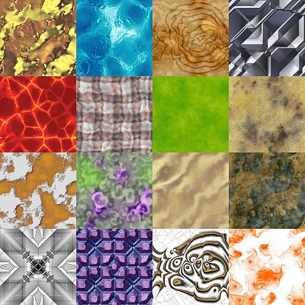
All six renders below are taken from the same zoomed-out camera position,
where the whole atlas is minified into a small part of the screen and the
pixel inspector is parked over the seam between the yellow, blue, red, and
woven tiles. Reading down the rows, the image gets progressively smoother
and the speckled noise in the inspector settles down. L_ZERO
with P_NEAREST is the sharpest and the noisiest, since each
pixel takes one arbitrary texel out of a large footprint.
L_NEAREST calms this noticeably by reading from a prefiltered
level instead, and L_LINEAR with P_LINEAR is the
smoothest of the six. The tradeoff runs in the other direction as well:
the smoother combinations lose some of the fine detail that the level 0
renders preserve, which is the over-blurring described above.
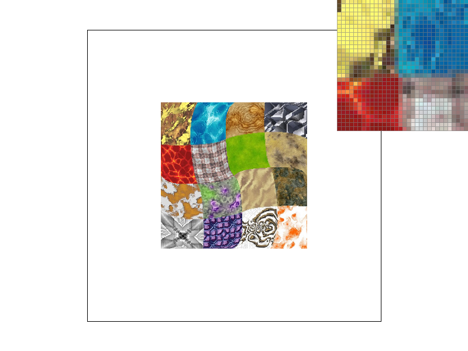
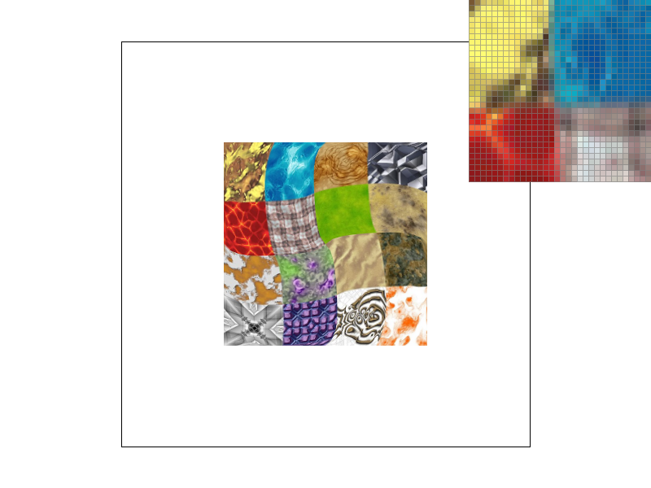
svg/texmap/test1.svg
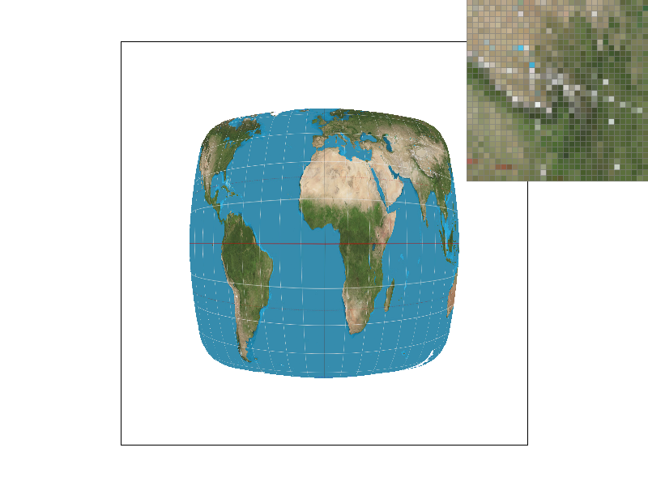
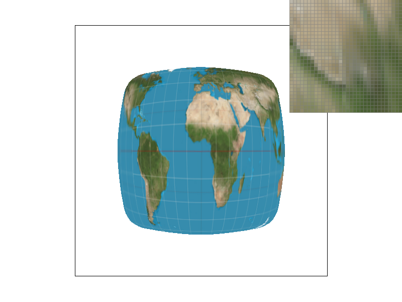
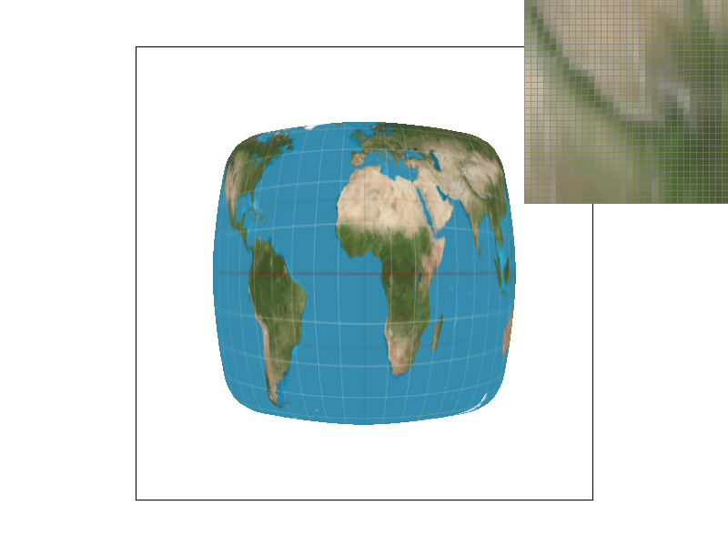
svg/texmap/test2.svg
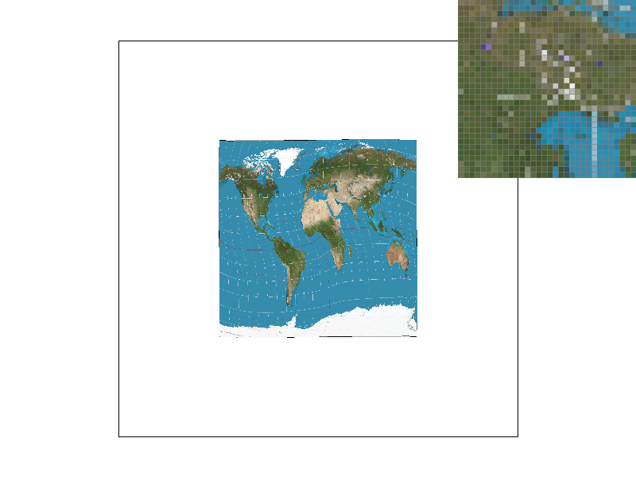
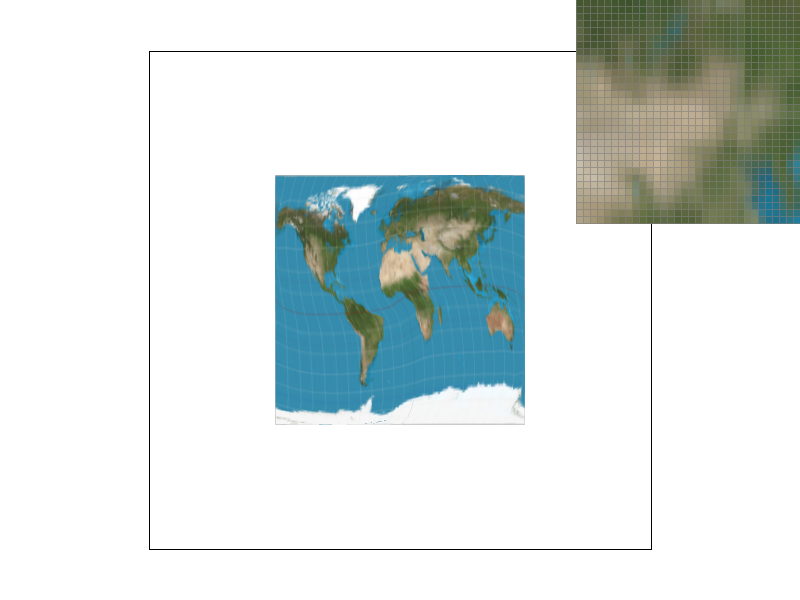
svg/texmap/test4.svg
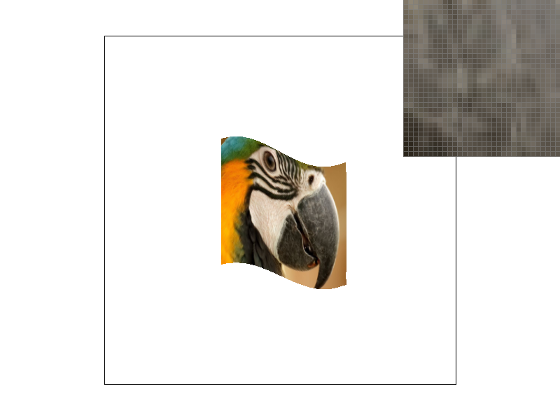
svg/texmap/test5.svg
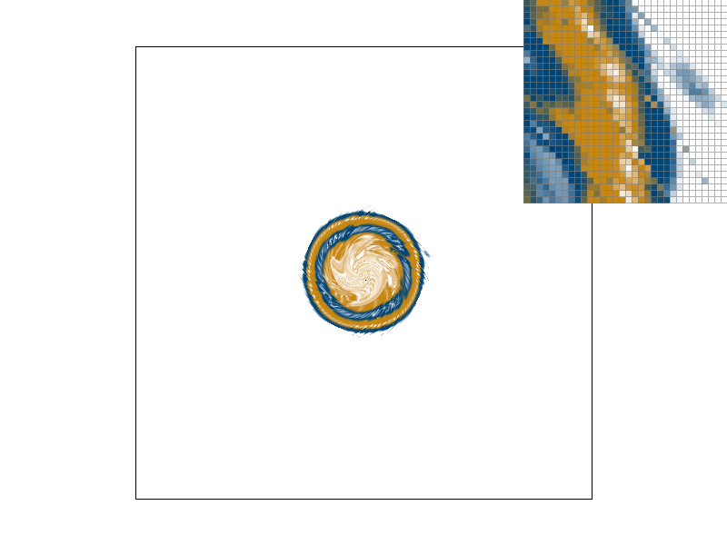
svg/texmap/test6.svg
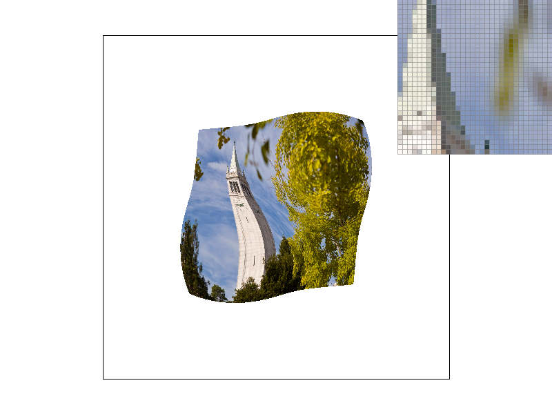
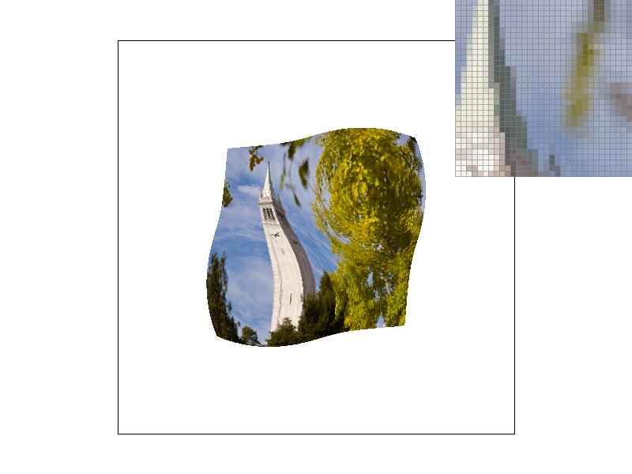
Task 7: Extra Credit - Art Competition
For the art competition, we generated a cartoon sun procedurally,
which falls under the "write a procedural SVG generator that
outputs complex shapes" category. The full generator is
included at src/generate_competition_svg.py and writes
its output to competition.svg at the repo root.
The rasterizer cannot draw curves, so every round shape in the image — the sun's face, its eyes, its smile — is approximated with straight edges instead of an actual arc:
-
ngon(cx, cy, r, n)generates the points of an n-sided regular polygon inscribed in a circle. With a large enough n (24 for the face, 12 for the eyes), this reads as a smooth circle once rasterized. -
arc_strip(cx, cy, r, a0, a1, n, thickness)samples a circular arc as n straight segments and thickens it into a closed band, which is what draws the smile.
The rays are the procedural centerpiece of the piece. Rather than
hand-placing 12 triangles, the script defines a single
ray polygon pointing straight up out of the sun's center, then repeats
it around a full circle with a Python for loop that wraps
each copy in <g transform="rotate(angle, cx, cy)">,
incrementing angle by 360° / 12 each
time and alternating between two shades of yellow/orange. The
rotation math itself is delegated entirely to the SVG
rotate transform rather than computed by hand in Python,
which is a direct, minimal use of the matrix-transform machinery this
assignment covers.
While building this, we ran into a real parsing quirk worth noting:
this codebase's SVG parser only strips commas for the
matrix(...) transform type. A transform like
rotate(30,400,400) silently parses the angle but drops
the pivot point (it defaults to the origin), while the
space-separated form rotate(30 400 400) parses
correctly. The generator emits space-separated arguments for exactly
this reason.
Result
How It Works
The whole image is built by a Python script
(src/generate_competition_svg.py) rather than by hand,
which is what makes it fit the "procedural SVG generator" category.
Since the rasterizer cannot draw curves, every round shape is
approximated with straight edges: an ngon(cx, cy, r, n)
helper generates an n-sided regular polygon inscribed in a
circle for the face and eyes, and an arc_strip(...)
helper samples a circular arc as several straight segments and
thickens it into a band for the smile.
The 12 sunburst rays are the procedural centerpiece: rather than
hand-computing 12 rotated triangles, the script defines a single ray
polygon pointing straight up from the sun's center, then repeats it
in a loop, wrapping each copy in
<g transform="rotate(angle, cx, cy)"> with an
incrementing angle and alternating color. The rotation math itself is
handled entirely by the SVG transform, not computed by hand in
Python.